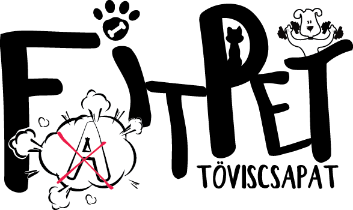
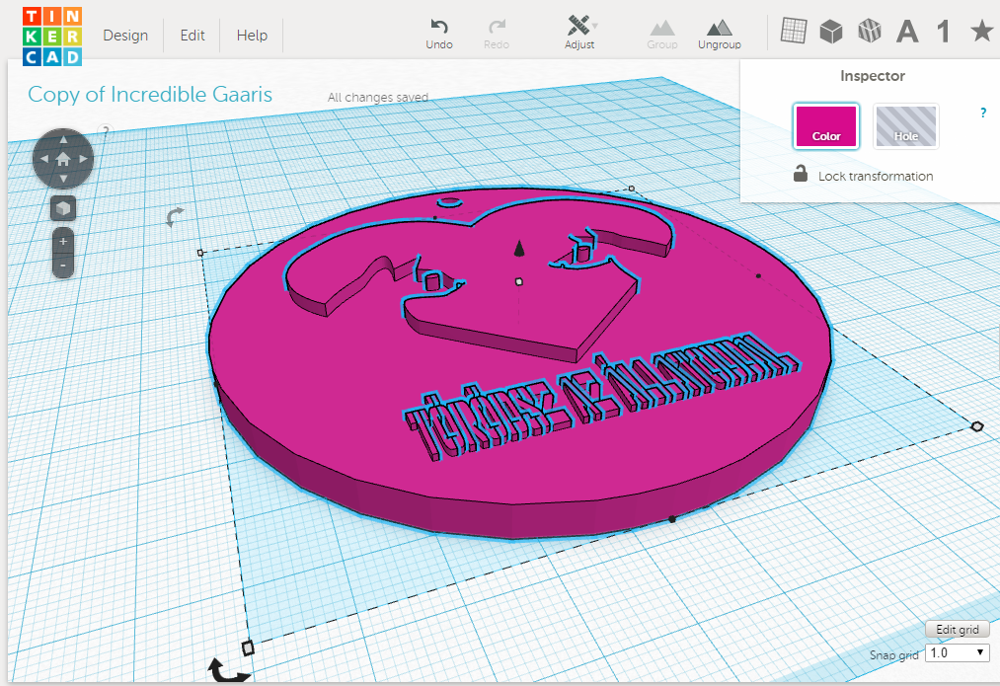
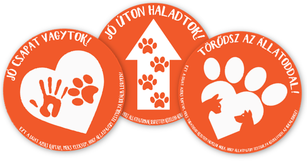
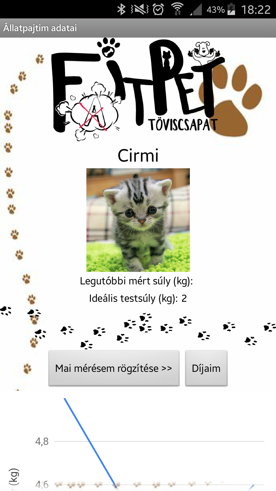

FatFitPet Android App
TövisCsapat - Kutatási projekt - Animal Allies 2016-17
Az általunk vizsgált probléma az Állatok túlsúlyossága
PROBLÉMA
Ennek oka a háziállatok túletetése és így túlsúlyossága.
MEGOLDÁSUNK
FatFitPet mobiltelefonos alkalmazás.
- applikáció, melyet mi készítettünk MIT AppInventor segítségével
- segítség, tanácsok, hogy hogyan legyél jó gazdi.
Segít a gazdinak tudatossá válni, még jutalmat is ad a sikerért - egy 3D modellt.
Letöltheted az alkalamázunkat a Google Play áruházból
Töltse le a FatFitPet-et és állata sovány lehet!
Download our app FatFitPet and your pet gets healthy again!



